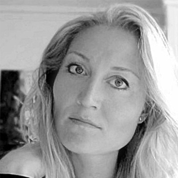

FRONTPAGE
BLOG
LECTURE
BIOGRAPHY
MY BOOK
GALLERY
CONTACT


My name is Pernille Britt Sommer, and I’m about to finish a novel where the Israeli / Palestinian conflict is the focal point seen with ordinary citizen-eyes. The lecture that I in this connection offer is based on a personal meeting with some of the world's hotspots, while it lights some of the conflict's key issues. You can read more about the lecture here.
Besides lecturing and finishing my novel, I work as a mentor for college students who needs help with planning and structuring of study programs. I am also an adviser for upcoming artist in relation to communicate feelings and observations. In this cooperation my focus is on the desired told story.
As a violinist I have communicated from the stage, as a graphic designer through words and pictures, and as cultural attaché I have mediated contacts between artists, across the national borders. I have been a teacher in elementary school, a private institution as well as the music and culture school, and as a traveller, I have lectured. After my trips to Israel/Palestine, my favourite destination is New York City, where the human diversity is rich and thereby stimulating, challenging and above all inspiring.
Besides of the direct work with communication have human complexity always interested me. This is why I for several years has been a mentor and tutor for physically and mentally challenged young people whose learning has been to find their way in their own lives. To notice and deal with the history we are in the middle of, can be overwhelming and challenging, but also stimulating and satisfying. Despite the stories differences we have as human beings one thing in common - to find ourselves in them, and not least, to deal with their presence. I am interested in these stories, and have therefore chosen to pick the ones I think are relevant not only for myself but also for others. Said in another way, are my world to observe and act, which is also the foundation for my lectures.